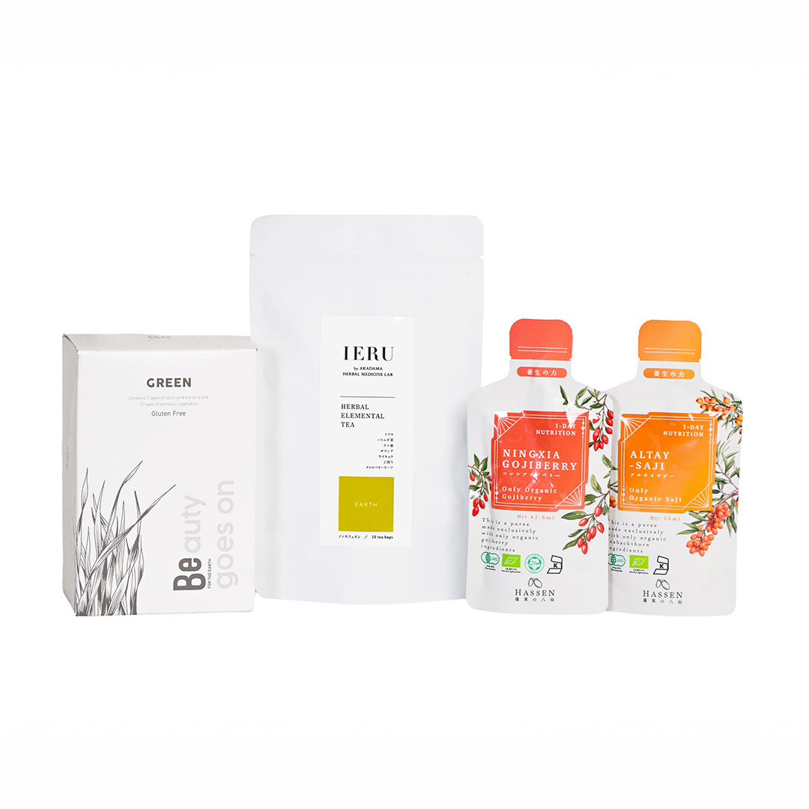
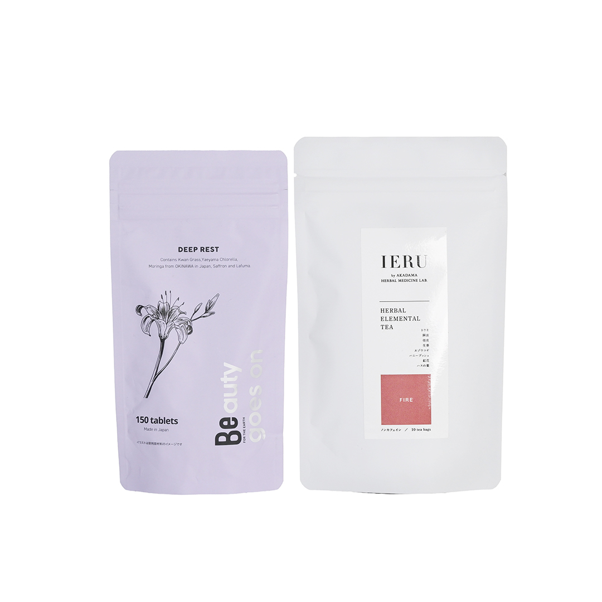
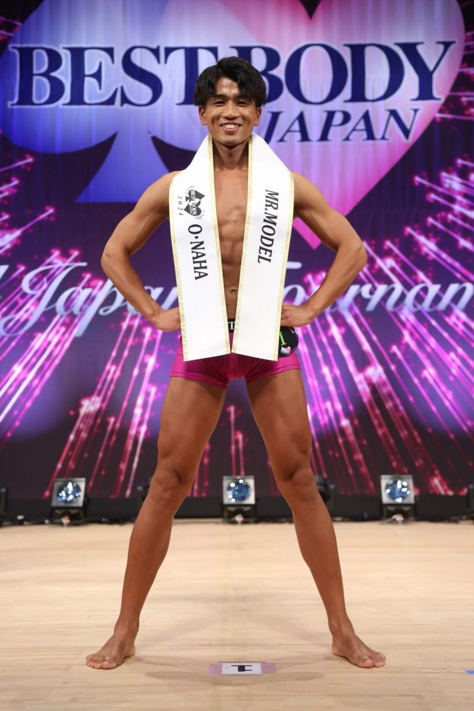
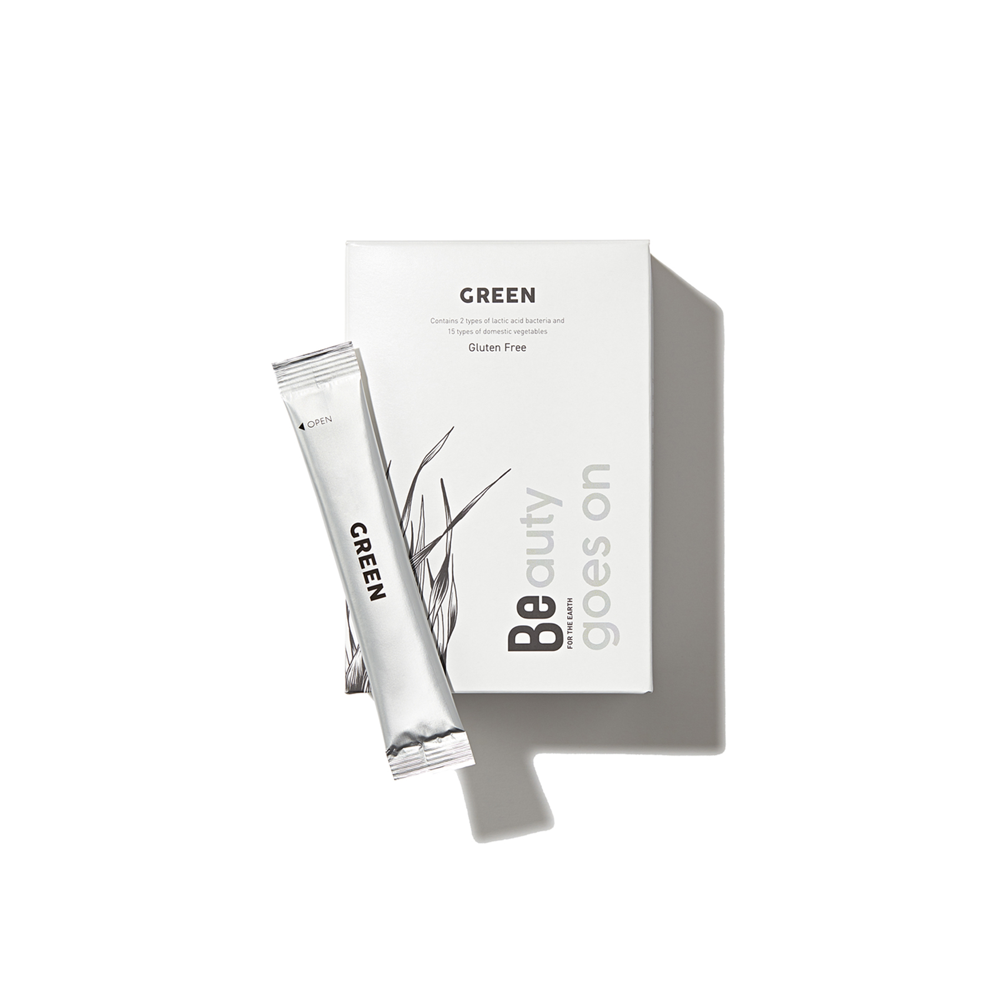
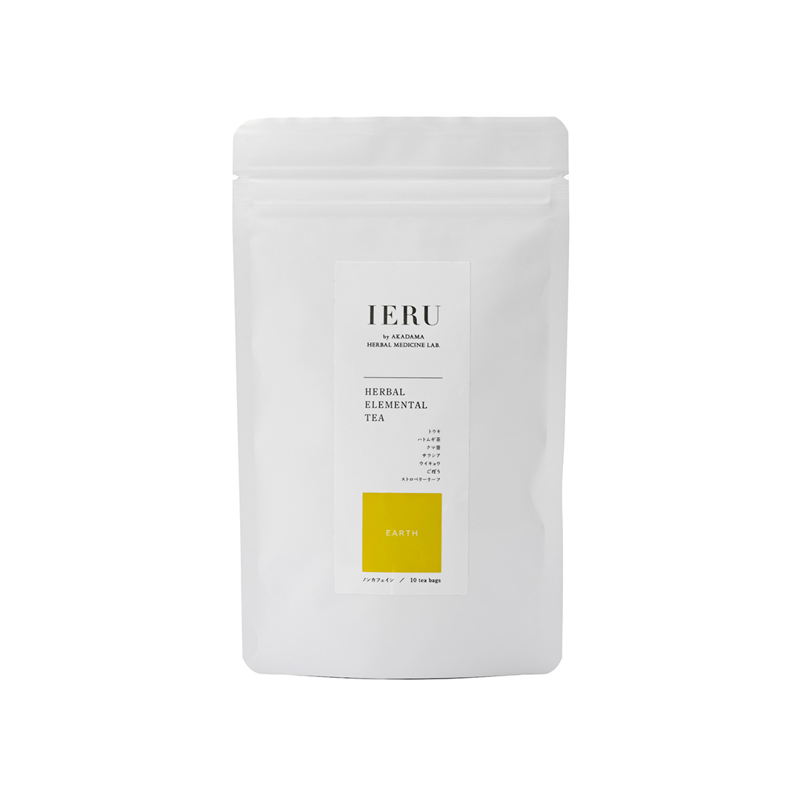
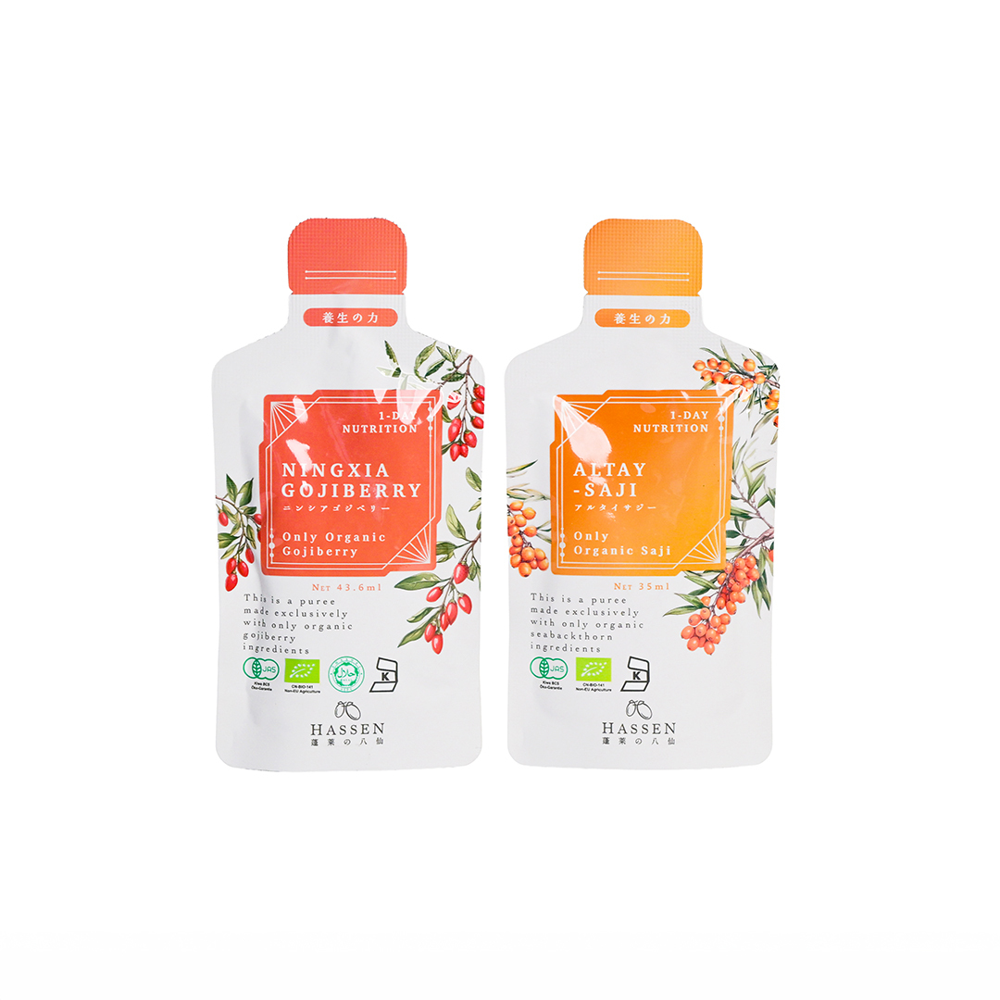
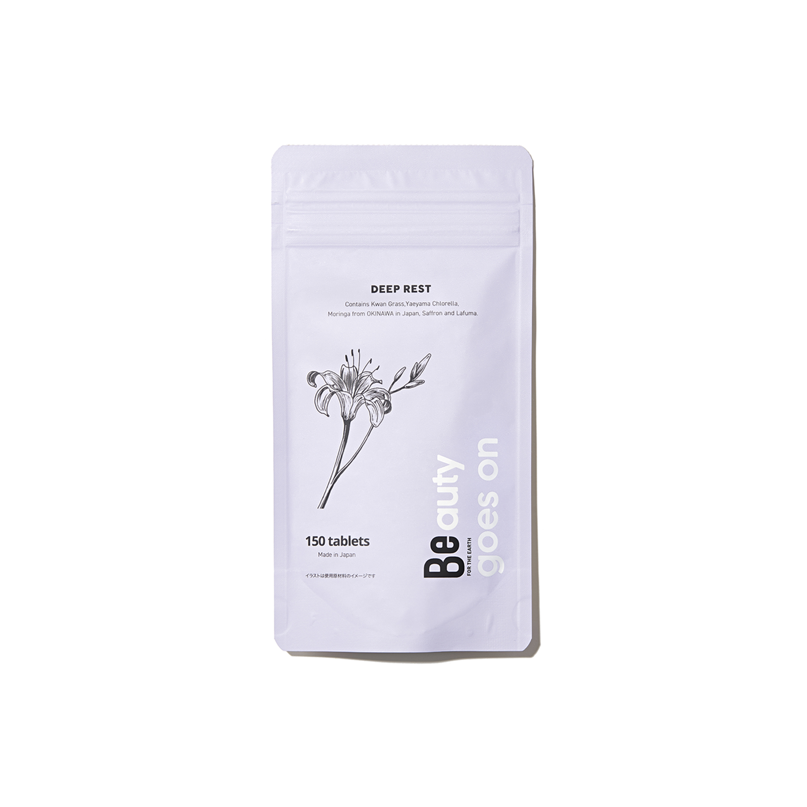
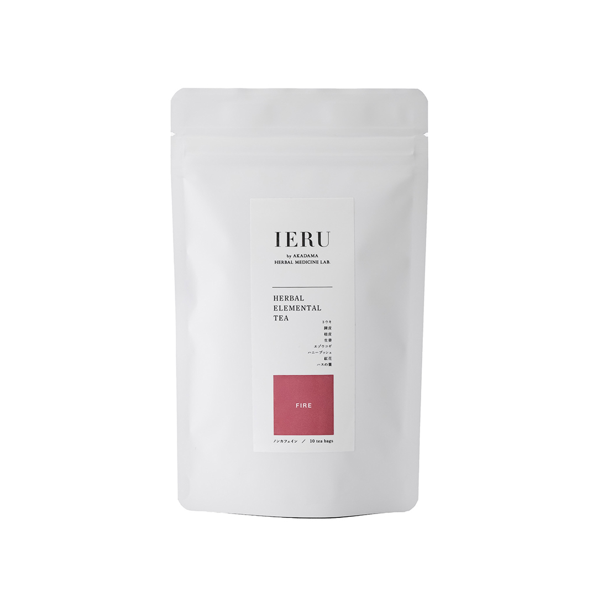

整体師が考える、身体をゼロに戻すための腸活・眠活習慣
今の身体は、
本来の状態ではありません。
整体で整え、腸や睡眠まで含めて見直す。
本来の状態へ戻すための習慣を、
私たちは大切にしています。
整体師が考える、身体をゼロに戻すための腸活・眠活習慣
整体で整え、腸や睡眠まで含めて見直す。
本来の状態へ戻すための習慣を、
私たちは大切にしています。
不調を感じたとき、多くの方は「外側からのケア」を求めます。
もちろん大切ですが、それだけでは不十分なケースも多いのです。
整体・ストレッチ
腸活・眠活・生活習慣
どちらか一方が欠けても、車はスムーズに走り続けられません。
外と内の両方を整えることで、身体の状態を底上げする
ことを大切にしています。
整体は、身体を整える「点」のケア。
日常生活は、身体が戻っていく「線」の時間。
施術は大切なきっかけですが、身体をゼロに近い状態で保つには、通わない日の積み重ねが欠かせません。
私たちは、内側からのケアを無理なく続ける習慣によって、その「間」を支えることが大切だと考えています。
この「間」の品質を保つ
整体で整えた身体を「戻さない」ために。あなたの今の状態に合わせて、
腸活または眠活のいずれかを日常の習慣に取り入れることをおすすめしています。

身体の回復スピードを支える「土台づくり」
腸は「第二の脳」とも呼ばれ、免疫や回復力と深く関わっています。腸内環境が整うと、整体の効果がスムーズに身体へ浸透し、疲れにくい状態をキープできるようになります。
10,000円
税込 / 送料込

自律神経をリセットし「回復を助ける」
睡眠は身体の緊張を解き、組織を修復するための唯一の時間です。眠りの質を高めることで、翌朝の身体の軽さが変わり、整体で整えた良い状態を定着させやすくなります。
10,000円
税込 / 送料込
朝や夜の
決まったタイミングで
忘れた日は、
また翌日から
毎日完璧でなくて
大丈夫です
生活に無理なく組み込めることを大切にしています。
健康は「消費」ではなく「投資」です。今の習慣が、10年後・20年後の歩き方や表情をつくります。
「歳だから仕方ない」と諦める前に、
身体を整える習慣を持つことを、私たちはおすすめしています。

施術を受けて感じたのは、「本当の意味でのオーダーメイド」だという点です。その場の不調だけでなく、どんな動作や体の使い方が原因になっているのかを丁寧に深掘りし、根本から整えてくれます。パーソナルトレーナーとして多くの身体を見てきましたが、施術後の変化だけでなく、再発を防ぐためのセルフケアまで具体的に教えてもらえる点はとても価値が高いと感じました。整体で体を整えながらインナーケアを併せて行うことで、トレーニングや日常動作の質も大きく向上します。専門家の立場から見ても、安心しておすすめできる整体です。
パーソナルトレーナー 畑様

eスポーツは長時間同じ姿勢でプレイするため、首や肩、手指に負担がかかりやすい仕事です。腱鞘炎をきっかけに整体を受けましたが、整体に加えて眠りを整える習慣を取り入れてからは、睡眠後の回復感が高まり、長時間の練習でも集中力を保ちやすくなりました。自分では気づきにくい体の状態を整えてもらえることで、結果的にパフォーマンス向上につながったと感じています。
e-スポーツプレイヤー Tensai様
(Crazy Racoon所属)
40代男性 / IT経営者
肩や首の不調が続いていましたが、施術で「痛みのある場所」だけでなくお腹の状態まで含めて体を見ていただいたことが印象的でした。 日々の食事やお酒の内容が、そのまま体の状態に影響していることも分かり、自宅でできるケアの方法まで教えてもらえたのはとても助かっています。 いろいろな器具を試しても改善しなかったので、もっと早く相談すればよかったと感じています。
20代女性 / 営業職
仕事柄、帰りが遅くなる日も多く、寝不足や体の重さが当たり前になっていました。 整体で体を整えてもらったあと、先生に勧めてもらったインナーケアを取り入れてから、眠りの深さが変わったように感じています。 朝の目覚めが楽になり、仕事中の集中力も続きやすくなりました。 インナーケアで日中のパフォーマンスが変わることに驚いています。
30代女性 / IT職
これまであまり体のメンテナンスを意識していませんでしたが、整体の先生に勧められてインナーケアを始めました。 日々の生活に少しプラスするだけなので、忙しい時でも無理なく続けられています。 体の調子が整ってきたことで、仕事中の集中力が上がったと感じています。
30代女性 / 医療職
もともと大きな不調はありませんでしたが、インナーケアを続けることで体のリズムがより安定してきたように感じています。 肌の調子が崩れにくくなり、気分の浮き沈みも少なくなりました。 日常を、穏やかな気持ちで過ごせていることが一番の変化です。
Gut Health Care
月額（30日分）
10,000円
税込 / 送料無料

野菜や植物由来の成分をベースに、日々の食事では不足しがちな要素を補うことを目的としています。 腸まわりの状態が整うことで、整体で整えた体が回復しやすい土台をつくることを目指しています。

日常の中で取り入れやすいハーブティーです。 体をリラックスさせる時間をつくることで、腸まわりを含めた内側の巡りを意識しやすくなります。

日常の食事だけでは摂りにくい植物由来の栄養を、無理なく補うためのジュースです。ゴジベリー（クコの実）とサジーをブレンドしています。
腸まわりの状態や巡りを意識することで、整体で整えた体を、より安定した状態で保ちやすくなります。
Sleep Health Care
月額（30日分）
10,000円
税込 / 送料無料

忙しい日常で乱れがちな生活リズムを整えることを目的としたサプリメントです。 整体後の体が、休むべき時間にきちんと休める状態へ向かうことをサポートします。

一日の終わりに、気持ちと体を切り替えるためのハーブティーです。 眠る前の時間を整えることで、回復のための時間を意識しやすくする役割を担っています。
※定期購入の回数縛りはありません。いつでもスキップ・解約が可能です。